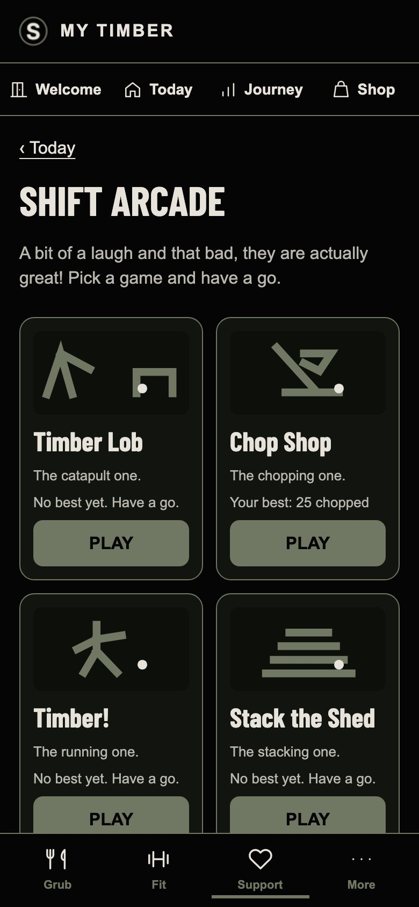
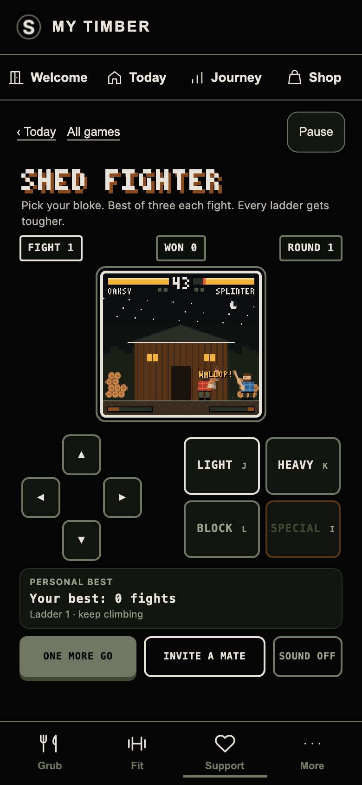

Live 2026-11-04T23:07:48.299Z · Verified 2026-11-04T23:08:14.892Z
Version 0bc31907-6556-4d1c-9d31-8ea5659a8bf7
New wording, Shed Fighter and uninterrupted sliding controls. Timber Lob generates further levels; Fighter continues beyond the Foreman. Lives, defeat and replay remain.
86 live browser checks passed. Shop unchanged. Full methods, scope and rollback.
Mobile p95, 20 fresh samples each: shed-fighter 1742 ms · timber-lob 1344 ms. About 60 fps.
Chromium/WebKit mobile emulation; physical iPhone/Android not tested. WebKit offline in-shell play passed; offline hard reload unverified.


| Engine | Check | Result |
|---|---|---|
| chromium | Authenticated synthetic account only | PASS |
| chromium | Shop content and links exactly match preceding live release | PASS |
| chromium | Eight games and exact approved introduction | PASS |
| chromium | timber-lob opens in retained native shell | PASS |
| chromium | G1 endless stage 8 is playable | PASS |
| chromium | G1 endless stage 36 is playable | PASS |
| chromium | G1 endless stage 10000 is playable | PASS |
| chromium | G1 level eight can be won using the real physics engine | PASS |
| chromium | G1 level win continues to level nine | PASS |
| chromium | G1 endless progress saves to member account | PASS |
| chromium | chop-shop opens in retained native shell | PASS |
| chromium | timber opens in retained native shell | PASS |
| chromium | stack-the-shed opens in retained native shell | PASS |
| chromium | saw-duel opens in retained native shell | PASS |
| chromium | timber-smash opens in retained native shell | PASS |
| chromium | over-the-shed opens in retained native shell | PASS |
| chromium | shed-fighter opens in retained native shell | PASS |
| chromium | G8 sound off by default; no example totals or prototype labels | PASS |
| chromium | Phone buttons fit above bottom navigation | PASS |
| chromium | G8 fighter selection starts a match | PASS |
| chromium | G8 uninterrupted Left to Right slide releases old and holds new | PASS |
| chromium | G8 real touch events switch without touchend | PASS |
| chromium | G8 independent pointer owners: releasing second keeps first held | PASS |
| chromium | G8 uninterrupted Light to Heavy slide damages opponent with both | PASS |
| chromium | G8 pause clears held controls | PASS |
| chromium | G8 Special cannot fire before full meter | PASS |
| chromium | G8 combat fills the special meter | PASS |
| chromium | G8 full-meter Special fires and consumes meter | PASS |
| chromium | G8 Block reduces actual CPU damage | PASS |
| chromium | G8 clears the Foreman and continues into a harder fourth fight | PASS |
| chromium | G8 higher best earned offline is queued for its owner | PASS |
| chromium | G8 best saved to member account | PASS |
| chromium | G8 best returns in another authenticated session | PASS |
| chromium | G8 replay returns to fighter selection | PASS |
| chromium | G8 floored result and replay work | PASS |
| chromium | G8 deliberate share contains only game, result and clean arcade URL | PASS |
| chromium | G8 reloaded game restores saved best | PASS |
| chromium | G8 previously loaded game opens offline | PASS |
| chromium | G8 back to Today retains the shell | PASS |
| chromium | Food, daily action and pile unchanged | PASS |
| chromium | G8 signed-out users cannot play | PASS |
| chromium | Eight games fit desktop grid | PASS |
| chromium | G8 desktop controls and canvas fit the shared shell | PASS |
| chromium | No browser execution errors | PASS |
| webkit | Authenticated synthetic account only | PASS |
| webkit | Shop content and links exactly match preceding live release | PASS |
| webkit | Eight games and exact approved introduction | PASS |
| webkit | timber-lob opens in retained native shell | PASS |
| webkit | G1 endless stage 8 is playable | PASS |
| webkit | G1 endless stage 36 is playable | PASS |
| webkit | G1 endless stage 10000 is playable | PASS |
| webkit | G1 level eight can be won using the real physics engine | PASS |
| webkit | G1 level win continues to level nine | PASS |
| webkit | G1 endless progress saves to member account | PASS |
| webkit | chop-shop opens in retained native shell | PASS |
| webkit | timber opens in retained native shell | PASS |
| webkit | stack-the-shed opens in retained native shell | PASS |
| webkit | saw-duel opens in retained native shell | PASS |
| webkit | timber-smash opens in retained native shell | PASS |
| webkit | over-the-shed opens in retained native shell | PASS |
| webkit | shed-fighter opens in retained native shell | PASS |
| webkit | G8 sound off by default; no example totals or prototype labels | PASS |
| webkit | Phone buttons fit above bottom navigation | PASS |
| webkit | G8 fighter selection starts a match | PASS |
| webkit | G8 uninterrupted Left to Right slide releases old and holds new | PASS |
| webkit | G8 uninterrupted Light to Heavy slide damages opponent with both | PASS |
| webkit | G8 pause clears held controls | PASS |
| webkit | G8 Special cannot fire before full meter | PASS |
| webkit | G8 combat fills the special meter | PASS |
| webkit | G8 full-meter Special fires and consumes meter | PASS |
| webkit | G8 Block reduces actual CPU damage | PASS |
| webkit | G8 clears the Foreman and continues into a harder fourth fight | PASS |
| webkit | G8 higher best earned offline is queued for its owner | PASS |
| webkit | G8 best saved to member account | PASS |
| webkit | G8 best returns in another authenticated session | PASS |
| webkit | G8 replay returns to fighter selection | PASS |
| webkit | G8 floored result and replay work | PASS |
| webkit | G8 deliberate share contains only game, result and clean arcade URL | PASS |
| webkit | G8 reloaded game restores saved best | PASS |
| webkit | G8 previously loaded game opens offline | PASS |
| webkit | G8 back to Today retains the shell | PASS |
| webkit | Food, daily action and pile unchanged | PASS |
| webkit | G8 signed-out users cannot play | PASS |
| webkit | Eight games fit desktop grid | PASS |
| webkit | G8 desktop controls and canvas fit the shared shell | PASS |
| webkit | No browser execution errors | PASS |